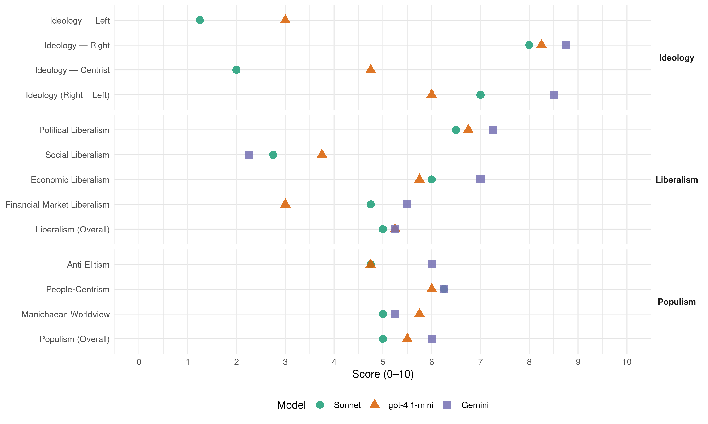

DF (Denmark, 2001)
manifesto_id 13720_200111
Get full text: This site shows derived annotations and short verbatim quotes only. The full manifesto text is © Manifesto Project / WZB — obtain it via manifesto-project.wzb.eu using the manifesto_id above.
Headline scores
| Dimension | Sonnet | gpt-4.1-mini | Gemini |
|---|---|---|---|
| Populism (Overall) | 5.0 | 5.5 | 6.0 |
| Anti-Elitism | 4.8 | 4.8 | 6.0 |
| People-Centrism | 6.2 | 6.0 | 6.2 |
| Manichaean Worldview | 5.0 | 5.8 | 5.2 |
| Ideology (Right − Left) | 7.0 | 6.0 | 8.5 |
| Liberalism (Overall) | 5.0 | 5.2 | 5.2 |
| Political Liberalism | 6.5 | 6.8 | 7.2 |
| Social Liberalism | 2.8 | 3.8 | 2.2 |
| Economic Liberalism | 6.0 | 5.8 | 7.0 |
| Financial-Market Liberalism | 4.8 | 3.0 | 5.5 |
Evidence per dimension
Economic Liberalism
Gemini · score 7.0 · verified · chunk 1
“reduktion af offentlige tilskud til erhvervsformål”
bruger flere ansatte end i sammenlignelige lande. Der skal foretages en reduktion af offentlige tilskud til erhvervsformål og til private, interessebetonede formål. 3.
Gemini · score 7.0 · verified · chunk 2
“liberalisering af apoteksvæsenet med mulighed for fri etableringsret”
Dansk Folkeparti kan derfor tilslutte sig bestræbelserne for en liberalisering af apoteksvæsenet med mulighed for fri etableringsret for nye apoteker og apotekskæder
Gemini · score 6.0 · verified · chunk 3
“De fungerer på markedsvilkår uden statstilskud”
popmusik, udenlandske actionfilm, gættelege, journalistiske telefonprogrammer og anden underholdning blive fuldt ud dækket. Alle radio- og fjernsynsstationers og selskabers ejerforhold og drift skal være underkastet en offentlig registrering og kontrol. De fungerer på markedsvilkår uden statstilskud. De kan organiseres
Gemini · score 8.0 · verified · chunk 4
“staten i detaljer skal regulere og styre erhvervslivet”
…vender sig mod en politik baseret på den holdning, at staten i detaljer skal regulere og styre erhvervslivet. Danmark er fattigt på råstoffer, men…
gpt-4.1-mini · score 5.0 · verified · chunk 1
“Den offentlige forvaltning skal effektiviseres. Det er meningsløst, at et lille land som Danmark har tre forvaltningsniveauer”
Den offentlige forvaltning skal effektiviseres. Det er meningsløst, at et lille land som Danmark har tre forvaltningsniveauer. Amtskommunerne skal derfor nedlægges. Kommunerne skal tilskyndes til at etablere tværkommunalt samarbejde på udvalgte forvaltningsområder, hvor dette kan øge effektiviteten og kvaliteten.
gpt-4.1-mini · score 6.0 · verified · chunk 2
“liberalisering af apoteksvæsenet med mulighed for fri etableringsret”
Dansk Folkeparti kan derfor tilslutte sig bestræbelserne for en liberalisering af apoteksvæsenet med mulighed for fri etableringsret for nye apoteker og apotekskæder under forudsætning af, at uddannelses- og kvalitetskrav opfyldes.
gpt-4.1-mini · score 5.0 · verified · chunk 3
“skattelovgivningen effektivt forhindret pensionskasserne i at gå ind i denne aktivitet”
Siden midten af 1990’erne har skattelovgivningen effektivt forhindret pensionskasserne i at gå ind i denne aktivitet, selv om de er økonomisk stærkt rustet og har en tradition for investering i boliger.
gpt-4.1-mini · score 7.0 · verified · chunk 4
“Dansk erhvervslivs konkurrenceevne er belastet af en offentlig sektor”
Et samfunds konkurrenceevne er afhængig af dets produktionsomkostninger. Dansk erhvervslivs konkurrenceevne er belastet af en offentlig sektor, der som helhed er meget ressourcekrævende. Dette problem kan kun løses ved forenkling og effektivisering.
Sonnet · score 6.0 · verified · chunk 1
“gradvis nedsættelse af skattetrykket”
Der er behov for omfattende reformer af det danske skattesystem på følgende områder: en gradvis nedsættelse af skattetrykket
Sonnet · score 6.0 · verified · chunk 2
“liberalisering af apoteksvæsenet med mulighed for fri etableringsret”
Dansk Folkeparti kan derfor tilslutte sig bestræbelserne for en liberalisering af apoteksvæsenet med mulighed for fri etableringsret for nye apoteker og apotekskæder under forudsætning af, at uddannelses- og kvalitetskrav opfyldes.
Sonnet · score 5.0 · mixed · chunk 3
“private investorer til at gå aktivt ind”
Der skal indføres lovgivningsmæssige incitamenter for pensionskasserne og private investorer til at gå aktivt ind i investeringer i nybyggeri
Sonnet · score 6.0 · verified · chunk 4
“vender sig mod en politik baseret på”
Dansk Folkeparti vender sig mod en politik baseret på den holdning, at staten i detaljer skal regulere og styre erhvervslivet
Financial-Market Liberalism
Gemini · score 4.0 · verified · chunk 1
“spekulationsbetingede kapitalbevægelser, som øger den økonomiske ustabilitet”
skadelige virkninger. Det drejer sig om følgende: De spekulationsbetingede kapitalbevægelser, som øger den økonomiske ustabilitet, især i de mest sårbare lande; de
Gemini · score 7.0 · verified · chunk 4
“incitamenter for pensionskasserne og private investorer til at gå aktivt ind i investeringer”
…Der skal indføres lovgivningsmæssige incitamenter for pensionskasserne og private investorer til at gå aktivt ind i investeringer i nybyggeri, herunder såvel ungdomsboliger og kollegiebyggeri…
gpt-4.1-mini · score 2.0 · verified · chunk 1
“Dansk Folkeparti har afvist og fortsat vil afvise Danmarks deltagelse i en fælles europæisk mønt”
Dansk Folkeparti ønsker at understrege, at det er en forudsætning for Danmarks eksistens som selvstændig nation, at samtlige disse politikområder besluttes af danske politikere henholdsvis Nationalbanken. Det er hovedårsagen til, at Dansk Folkeparti har afvist og fortsat vil afvise Danmarks deltagelse i en fælles europæisk mønt, som flytter den økonomiske magt over Danmark over på udenlandske politikeres og embedsmænds hænder.
gpt-4.1-mini · score 4.0 · verified · chunk 4
“Dansk Folkeparti anser det for ønskeligt, at offentlige virksomheder drives effektivt”
Dansk Folkeparti anser det for ønskeligt, at offentlige virksomheder drives effektivt og i overensstemmelse med markedsprincipper. Vi ser med skepsis på salg til private af offentligt ejede virksomheder, som udgør vigtige dele af landets infrastruktur.
Sonnet · score 4.0 · verified · chunk 1
“spekulationsbetingede kapitalbevægelser, som øger den økonomiske ustabilitet”
De spekulationsbetingede kapitalbevægelser, som øger den økonomiske ustabilitet, især i de mest sårbare lande
Sonnet · score 5.0 · verified · chunk 2
“tegne en sygeforsikring for den familiesammenførte person”
Udlændinge som ønsker familiesammenføring i Danmark skal være omfattet af en pligt til at tegne en sygeforsikring for den familiesammenførte person, indtil den pågældende har en normal, skattepligtig arbejdsindkomst i Danmark.
Sonnet · score 4.0 · verified · chunk 3
“pensionskasserne i at gå ind i denne aktivitet”
Siden midten af 1990’erne har skattelovgivningen effektivt forhindret pensionskasserne i at gå ind i denne aktivitet, selv om de er økonomisk stærkt rustet og har en tradition for investering i boliger.
Sonnet · score 6.0 · verified · chunk 4
“lettere at investere i aktier”
Ved udbredelsen af aktier som ejerform skal det blive lettere at investere i aktier. Samtidig opnås et bredere ejerskab
Political Liberalism
Gemini · score 7.0 · verified · chunk 1
“sikre det enkelte menneskes rettigheder og retssikkerhed”
Menneskerettighederne I et retssamfund er det afgørende at sikre det enkelte menneskes rettigheder og retssikkerhed. Statsmagten er ikke ufejlbarlig. Statens magt
Gemini · score 7.0 · verified · chunk 2
“underlagt sundhedsministeren og dermed Folketingets parlamentariske kontrol”
Den centrale sygehusstyrelse skal være underlagt sundhedsministeren og dermed Folketingets parlamentariske kontrol. Der må indenfor den fælles
Gemini · score 8.0 · verified · chunk 3
“respekt for det enkelte menneskes rettigheder og retssikkerhed”
Dansk Folkeparti lægger afgørende vægt på at det danske samfund fortsat udvikler sig som et retssamfund med respekt for det enkelte menneskes rettigheder og retssikkerhed. Offentlig myndighed
Gemini · score 7.0 · verified · chunk 4
“fastholde sine bedste demokratiske traditioner og fortsat udvikles som et folkestyre”
…samfund står ved en korsvej. Hvis Danmark skal fastholde sine bedste demokratiske traditioner og fortsat udvikles som et folkestyre, en retsstat og et velfærdssamfund, kræver det…
gpt-4.1-mini · score 6.0 · verified · chunk 1
“Dansk Folkeparti vil værne om ytringsfriheden, foreningsfriheden og forsamlings-friheden”
Dansk Folkeparti vil værne om ytringsfriheden, foreningsfriheden og forsamlings-friheden. Disse rettigheder har været og er fortsat af afgørende betydning for udviklingen af det danske folkestyre. Enhver begrænsning i disse rettigheder rummer risiko for meningscensur og overgreb fra magthaverne.
gpt-4.1-mini · score 7.0 · verified · chunk 2
“Folketingets parlamentariske kontrol”
Den centrale sygehusstyrelse skal være underlagt sundhedsministeren og dermed Folketingets parlamentariske kontrol.
gpt-4.1-mini · score 7.0 · verified · chunk 3
“retssamfund med respekt for det enkelte menneskes rettigheder og retssikkerhed”
Dansk Folkeparti lægger afgørende vægt på at det danske samfund fortsat udvikler sig som et retssamfund med respekt for det enkelte menneskes rettigheder og retssikkerhed.
gpt-4.1-mini · score 7.0 · verified · chunk 4
“Demokratiet og nationen er værnet om den enkeltes velfærd og frihed”
Vor politiske kultur har historiske rødder, der har udviklet demokratier og nationer, som – med alle ufuldstændigheder – giver befolkningerne den bedst mulige adgang til at forme deres eget liv. Demokratiet og nationen er værnet om den enkeltes velfærd og frihed.
Sonnet · score 5.0 · mixed · chunk 1
“styrke og forny folkestyret i respekt for grundloven”
Dansk Folkeparti ønsker at styrke og forny folkestyret i respekt for grundloven, bl.a. ved indførelse af mere direkte demokrati.
Sonnet · score 6.0 · verified · chunk 2
“underlagt sundhedsministeren og dermed Folketingets parlamentariske kontrol”
Den centrale sygehusstyrelse skal være underlagt sundhedsministeren og dermed Folketingets parlamentariske kontrol. Der må indenfor den fælles sygehusplanlægning foretages en specialisering.
Sonnet · score 6.0 · mixed · chunk 3
“domstolenes uafhængighed”
Etableringen af Domstolsstyrelsen er en vigtig styrkelse af domstolenes uafhængighed. Dansk Folkeparti vil være meget opmærksom på at Domstolsstyrelsen får mulighed for at udvikle sig tilfredsstillende
Sonnet · score 7.0 · verified · chunk 4
“fastholde sine bedste demokratiske traditioner”
Hvis Danmark skal fastholde sine bedste demokratiske traditioner og fortsat udvikles som et folkestyre, en retsstat
Liberalism (Overall)
Gemini · score 5.0 · verified · chunk 1
“sikre det enkelte menneskes rettigheder og retssikkerhed”
Menneskerettighederne I et retssamfund er det afgørende at sikre det enkelte menneskes rettigheder og retssikkerhed. Statsmagten er ikke ufejlbarlig. Statens magt
Gemini · score 5.0 · verified · chunk 2
“liberalisering af apoteksvæsenet med mulighed for fri etableringsret”
Dansk Folkeparti kan derfor tilslutte sig bestræbelserne for en liberalisering af apoteksvæsenet med mulighed for fri etableringsret for nye apoteker og apotekskæder
Gemini · score 5.0 · verified · chunk 3
“respekt for det enkelte menneskes rettigheder og retssikkerhed”
Dansk Folkeparti lægger afgørende vægt på at det danske samfund fortsat udvikler sig som et retssamfund med respekt for det enkelte menneskes rettigheder og retssikkerhed. Offentlig myndighed
Gemini · score 6.0 · verified · chunk 4
“staten i detaljer skal regulere og styre erhvervslivet”
…vender sig mod en politik baseret på den holdning, at staten i detaljer skal regulere og styre erhvervslivet. Danmark er fattigt på råstoffer, men…
gpt-4.1-mini · score 4.0 · verified · chunk 1
“Dansk Folkeparti vil værne om ytringsfriheden, foreningsfriheden og forsamlings-friheden”
Dansk Folkeparti vil værne om ytringsfriheden, foreningsfriheden og forsamlings-friheden. Disse rettigheder har været og er fortsat af afgørende betydning for udviklingen af det danske folkestyre. Enhver begrænsning i disse rettigheder rummer risiko for meningscensur og overgreb fra magthaverne.
gpt-4.1-mini · score 6.0 · verified · chunk 2
“liberalisering af apoteksvæsenet med mulighed for fri etableringsret”
Dansk Folkeparti kan derfor tilslutte sig bestræbelserne for en liberalisering af apoteksvæsenet med mulighed for fri etableringsret for nye apoteker og apotekskæder under forudsætning af, at uddannelses- og kvalitetskrav opfyldes.
gpt-4.1-mini · score 5.0 · verified · chunk 3
“retssamfund med respekt for det enkelte menneskes rettigheder og retssikkerhed”
Dansk Folkeparti lægger afgørende vægt på at det danske samfund fortsat udvikler sig som et retssamfund med respekt for det enkelte menneskes rettigheder og retssikkerhed.
gpt-4.1-mini · score 6.0 · verified · chunk 4
“Demokratiet og nationen er værnet om den enkeltes velfærd og frihed”
Vor politiske kultur har historiske rødder, der har udviklet demokratier og nationer, som – med alle ufuldstændigheder – giver befolkningerne den bedst mulige adgang til at forme deres eget liv. Demokratiet og nationen er værnet om den enkeltes velfærd og frihed.
Sonnet · score 5.0 · mixed · chunk 1
“frie og selvstændige stater”
det europæiske og internationale samarbejde mellem frie og selvstændige stater, som det store flertal af de europæiske folk ønsker.
Sonnet · score 5.0 · verified · chunk 2
“liberalisering af apoteksvæsenet med mulighed for fri etableringsret”
Dansk Folkeparti kan derfor tilslutte sig bestræbelserne for en liberalisering af apoteksvæsenet med mulighed for fri etableringsret for nye apoteker og apotekskæder under forudsætning af, at uddannelses- og kvalitetskrav opfyldes.
Sonnet · score 4.0 · mixed · chunk 3
“domstolenes uafhængighed”
Etableringen af Domstolsstyrelsen er en vigtig styrkelse af domstolenes uafhængighed. Dansk Folkeparti vil være meget opmærksom på at Domstolsstyrelsen får mulighed for at udvikle sig tilfredsstillende
Sonnet · score 5.0 · mixed · chunk 4
“øgede liberalisering på energiområdet”
Dansk Folkeparti er tilhænger af den øgede liberalisering på energiområdet, men finder det utilfredsstillende
Anti-Elitism
Gemini · score 8.0 · verified · chunk 1
“voksende afstand mellem de politiske beslutningstagere og befolkningen”
truslerne mod Danmarks udvikling består. Dansk Folkeparti mener, at nogle hovedtræk må fremhæves: * Der er en voksende afstand mellem de politiske beslutningstagere og befolkningen. Alt for mange vigtige afgørelser træffes bag
Gemini · score 5.0 · verified · chunk 2
“afstanden mellem fagbevægelsens ledere og den enkelte”
Socialdemokratiet har bevirket, at afstanden mellem fagbevægelsens ledere og den enkelte lønmodtagers interesser er næsten uoverstigelig.
Gemini · score 5.0 · verified · chunk 3
“domstolene ofte er ude af trit med befolkningens holdning”
Minimumsstraffe Det har vist sig, at domstolene ofte er ude af trit med befolkningens holdning til straffe, og at forhøjelse af strafferammerne
Gemini · score 6.0 · verified · chunk 4
“Dette problem har et politisk flertal bevidst valgt at ignorere”
…børnefamilier og ældre er reduceret tilsvarende. Dette problem har et politisk flertal bevidst valgt at ignorere. I overensstemmelse med Dansk Folkepartis udlændingepolitik…
gpt-4.1-mini · score 7.0 · verified · chunk 1
“Indefra af lukkede og intolerante mindretal og udefra gennem dyrkelsen af globalisering og international kapitalmagt”
Samhørigheden og fællesskabet i Danmark og andre små lande trues i dag fra flere sider. Indefra af lukkede og intolerante mindretal og udefra gennem dyrkelsen af globalisering og international kapitalmagt. Dansk Folkeparti opfordrer til øget bevidsthed og sammenhold om de værdier, det danske samfund er bygget på.
gpt-4.1-mini · score 2.0 · verified · chunk 2
“fagbevægelsens ledere og den enkelte lønmodtagers interesser er næsten uoverstigelig”
Den centralisering af magten, der er sket i hovedorganisationerne, sammenholdt med den snævre tilknytning til Socialdemokratiet har bevirket, at afstanden mellem fagbevægelsens ledere og den enkelte lønmodtagers interesser er næsten uoverstigelig.
gpt-4.1-mini · score 3.0 · verified · chunk 3
“Det er ikke Danmark der er noget galt med”
Det er ikke Danmark der er noget galt med, det er ikke dansk kultur eller samfundsstruktur, der trænger til at laves om - i så fald ville så mange mennesker ikke komme hertil og forsøge at få opholdstilladelse.
gpt-4.1-mini · score 7.0 · verified · chunk 4
“et politisk flertal bevidst valgt at ignorere”
det antal boliger, der står til rådighed for andre boligsøgende, herunder studerende, børnefamilier og ældre er reduceret tilsvarende. Dette problem har et politisk flertal bevidst valgt at ignorere. I overensstemmelse med Dansk Folkepartis udlændingepolitik må der lukkes for tilgangen af indvandrere, som alene kommer til Danmark for at opnå en økonomisk bedre tilværelse.
Sonnet · score 7.0 · verified · chunk 1
“voksende afstand mellem de politiske beslutningstagere og befolkningen”
Der er en voksende afstand mellem de politiske beslutningstagere og befolkningen. Alt for mange vigtige afgørelser træffes bag lukkede døre
Sonnet · score 4.0 · verified · chunk 2
“centralisering af magten, der er sket i hovedorganisationerne”
Den centralisering af magten, der er sket i hovedorganisationerne, sammenholdt med den snævre tilknytning til Socialdemokratiet har bevirket, at afstanden mellem fagbevægelsens ledere og den enkelte lønmodtagers interesser er næsten uoverstigelig.
Sonnet · score 3.0 · verified · chunk 3
“politisk flertal bevidst valgt at ignorere”
Dette problem har et politisk flertal bevidst valgt at ignorere. I overensstemmelse med Dansk Folkepartis udlændingepolitik
Sonnet · score 5.0 · verified · chunk 4
“et politisk flertal bevidst valgt at ignorere”
Dette problem har et politisk flertal bevidst valgt at ignorere. I overensstemmelse med Dansk Folkepartis udlændingepolitik
Ideology — Centrist
gpt-4.1-mini · score 6.0 · verified · chunk 1
“Der er en voksende afstand mellem de politiske beslutningstagere og befolkningen”
Der er en voksende afstand mellem de politiske beslutningstagere og befolkningen. Alt for mange vigtige afgørelser træffes bag lukkede døre uden folkelig debat og støtte. Vælgernes mulighed for at vinde forståelse for og indsigt i de politiske beslutninger forringes.
gpt-4.1-mini · score 4.0 · verified · chunk 2
“Dansk Folkeparti ønsker, at alle kan tage ansvaret for deres eget liv”
For Dansk Folkeparti er det vigtigt, at der skabes de bedst mulige rammer for, at alle kan tage ansvaret for deres eget liv og et medansvar for samfundets udvikling.
gpt-4.1-mini · score 4.0 · verified · chunk 3
“Dansk Folkeparti er tilhænger af et kulturelt samarbejde med andre lande, men vi er modstandere af at give kulturer, der bygger på helt andre værdinormer end vore, indflydelse i Danmark”
Dansk Folkeparti er tilhænger af et kulturelt samarbejde med andre lande, men vi er modstandere af at give kulturer, der bygger på helt andre værdinormer end vore, indflydelse i Danmark.
gpt-4.1-mini · score 5.0 · verified · chunk 4
“Dansk Folkeparti opfordrer alle, der har interesse for samfundsudviklingen”
Ved at deltage i samfundsdebatten, ved at være med i interesseorganisationernes arbejde eller ved at tilslutte sig et politisk parti. Dansk Folkeparti opfordrer alle, der har interesse for samfundsudviklingen til at benytte disse muligheder.
Sonnet · score 2.0 · verified · chunk 1
“fælles værdier og fælles ansvar”
Dansk Folkeparti vil bruge sin politiske indflydelse til at udvikle og forny det danske samfund og til at forsvare det danske folks selvstændighed
Sonnet · score 2.0 · verified · chunk 2
“fagbevægelsens ledere og den enkelte lønmodtagers interesser”
afstanden mellem fagbevægelsens ledere og den enkelte lønmodtagers interesser er næsten uoverstigelig. Der er derfor i dag blandt fagbevægelsens menige medlemmer en udbredt og stor skepsis over for fagbevægelsens rolle.
Sonnet · score 2.0 · verified · chunk 3
“politisk ensidighed vil blive vanskeliggjort”
Herved bliver den politiske styring åben og underkastet offentlig kritik, og den nuværende politiske ensidighed vil blive vanskeliggjort.
Sonnet · score 2.0 · verified · chunk 4
“konstruktivt samarbejde med andre politiske partier”
vi er parat til i konstruktivt samarbejde med andre politiske partier at yde en engageret indsats
Ideology — Left
gpt-4.1-mini · score 3.0 · verified · chunk 1
“Den offentlige sektors voldsomme vækst rammer direkte det enkelte menneskes frihed”
Den offentlige sektors voldsomme vækst rammer direkte det enkelte menneskes frihed: på den ene side gennem det stærke skattetryk og de ofte vilkårlige skatteregler, som styrer forbrugsvalget og hæmmer initiativ og virkelyst, og på den anden side ved at skabe en institutionaliseret forsørgelseskultur, der holder alt for mange mennesker udenfor et aktivt liv.
gpt-4.1-mini · score 3.0 · verified · chunk 2
“modstand mod at vælge tillidsmænd af anden politisk observans end socialdemokrater”
Fagbevægelsens tvangsudskrevne økonomiske bidrag til Socialdemokratiet og den i fagbevægelsen udbredte modstand mod at vælge tillidsmænd af anden politisk observans end socialdemokrater er i sig selv en meget stor hindring for, at fagbevægelsen kan udvikle sig i de kommende år.
gpt-4.1-mini · score 2.0 · verified · chunk 3
“Det er ikke Danmark der er noget galt med, det er ikke dansk kultur eller samfundsstruktur, der trænger til at laves om”
Det er ikke Danmark der er noget galt med, det er ikke dansk kultur eller samfundsstruktur, der trænger til at laves om - i så fald ville så mange mennesker ikke komme hertil og forsøge at få opholdstilladelse.
gpt-4.1-mini · score 4.0 · verified · chunk 4
“Der skal indføres lovgivningsmæssige incitamenter for pensionskasserne”
Der skal indføres lovgivningsmæssige incitamenter for pensionskasserne og private investorer til at gå aktivt ind i investeringer i nybyggeri, herunder såvel ungdomsboliger og kollegiebyggeri som seniorboliger.
Sonnet · score 2.0 · verified · chunk 1
“international kapitalmagt”
Indefra af lukkede og intolerante mindretal og udefra gennem dyrkelsen af globalisering og international kapitalmagt.
Sonnet · score 1.0 · verified · chunk 2
“markedsmekanismen ikke i sig selv sikrer en retfærdig fordeling”
Den skal også mindske de skel i befolkningens økonomiske og sociale kår, som er en følge af dels, at markedsmekanismen ikke i sig selv sikrer en retfærdig fordeling dels, at nogle mennesker ikke er i stand til at klare deres tilværelse.
Sonnet · score 1.0 · verified · chunk 3
“støtte til den professionelle kunst”
Dansk Folkeparti ønsker, at det økonomiske og kunstneriske ansvar for den støtte, der ydes til den professionelle kunst, overlades til råd
Sonnet · score 1.0 · verified · chunk 4
“reducere de grønne afgifter”
Dansk Folkeparti ønsker at reducere de grønne afgifter til et niveau som virker adfærdsregulerende
Ideology (Right − Left)
Gemini · score 9.0 · verified · chunk 1
“En voldsom indvandring fra lande, der står fjernt”
folkeskolens elever har ikke et reelt udbytte af undervisningen. * En voldsom indvandring fra lande, der står fjernt fra den danske og europæiske kultur og livsform
Gemini · score 9.0 · verified · chunk 2
“masseindvandring af fremmede religioner og fremmede kulturer”
vores kultur, og den kan i et så lille land som vort ikke overleve, hvis vi tillader masseindvandring af fremmede religioner og fremmede kulturer. Et multikulturelt samfund er
Gemini · score 8.0 · verified · chunk 3
“modarbejde ethvert forsøg på at skabe et multikulturelt eller multietnisk samfund”
og vi vil modarbejde ethvert forsøg på at skabe et multikulturelt eller multietnisk samfund i Danmark, dvs. et samfund, hvor en
Gemini · score 8.0 · verified · chunk 4
“lukkes for tilgangen af indvandrere, som alene kommer til Danmark”
…I overensstemmelse med Dansk Folkepartis udlændingepolitik må der lukkes for tilgangen af indvandrere, som alene kommer til Danmark for at opnå en økonomisk bedre tilværelse. Det…
gpt-4.1-mini · score 7.0 · verified · chunk 1
“Der er en voksende afstand mellem de politiske beslutningstagere og befolkningen”
Der er en voksende afstand mellem de politiske beslutningstagere og befolkningen. Alt for mange vigtige afgørelser træffes bag lukkede døre uden folkelig debat og støtte. Vælgernes mulighed for at vinde forståelse for og indsigt i de politiske beslutninger forringes.
gpt-4.1-mini · score 5.0 · verified · chunk 2
“Dansk Folkeparti er modstander af de åbne grænser”
Dansk Folkeparti er modstander af de åbne grænser og vil arbejde for, at den eksisterende velfærdsmodel fastholdes for de mennesker, som har deltaget i at skabe den, og som tilslutter sig de kulturelle forudsætninger for det danske samfund.
gpt-4.1-mini · score 6.0 · verified · chunk 3
“Danmark er danskernes land, det er meget lille og dets fortsatte eksistens som et stabilt demokrati er betinget af, at vores befolkningssammensætning ikke ændres vidtgående”
Danmark er danskernes land, det er meget lille og dets fortsatte eksistens som et stabilt demokrati er betinget af, at vores befolkningssammensætning ikke ændres vidtgående.
gpt-4.1-mini · score 6.0 · verified · chunk 4
“et politisk flertal bevidst valgt at ignorere”
det antal boliger, der står til rådighed for andre boligsøgende, herunder studerende, børnefamilier og ældre er reduceret tilsvarende. Dette problem har et politisk flertal bevidst valgt at ignorere. I overensstemmelse med Dansk Folkepartis udlændingepolitik må der lukkes for tilgangen af indvandrere, som alene kommer til Danmark for at opnå en økonomisk bedre tilværelse.
Sonnet · score 8.0 · verified · chunk 1
“danskerne til et mindretal i Danmark”
kan gøre danskerne til et mindretal i Danmark i det 21. århundrede. Voksende kvarterer omkring de store byer er i dag blevet ghettoer
Sonnet · score 6.0 · verified · chunk 2
“masseindvandring af fremmede religioner og fremmede kulturer”
Den kan i et så lille land som vort ikke overleve, hvis vi tillader masseindvandring af fremmede religioner og fremmede kulturer. Et multikulturelt samfund er et samfund uden indre sammenhæng og sammenhold.
Sonnet · score 7.0 · verified · chunk 3
“masseindvandring af fremmede religioner og fremmede kulturer”
Den livsform, vi har valgt i Danmark, er enestående. Den er betinget af vores kultur, og den kan i et så lille land som vort ikke overleve, hvis vi tillader masseindvandring af fremmede religioner og fremmede kulturer.
Sonnet · score 7.0 · verified · chunk 4
“lukkes for tilgangen af indvandrere”
I overensstemmelse med Dansk Folkepartis udlændingepolitik må der lukkes for tilgangen af indvandrere
Ideology — Right
Gemini · score 9.0 · verified · chunk 1
“En voldsom indvandring fra lande, der står fjernt”
folkeskolens elever har ikke et reelt udbytte af undervisningen. * En voldsom indvandring fra lande, der står fjernt fra den danske og europæiske kultur og livsform
Gemini · score 9.0 · verified · chunk 2
“masseindvandring af fremmede religioner og fremmede kulturer”
vores kultur, og den kan i et så lille land som vort ikke overleve, hvis vi tillader masseindvandring af fremmede religioner og fremmede kulturer. Et multikulturelt samfund er
Gemini · score 9.0 · verified · chunk 3
“modarbejde ethvert forsøg på at skabe et multikulturelt eller multietnisk samfund”
og vi vil modarbejde ethvert forsøg på at skabe et multikulturelt eller multietnisk samfund i Danmark, dvs. et samfund, hvor en
Gemini · score 8.0 · verified · chunk 4
“lukkes for tilgangen af indvandrere, som alene kommer til Danmark”
…I overensstemmelse med Dansk Folkepartis udlændingepolitik må der lukkes for tilgangen af indvandrere, som alene kommer til Danmark for at opnå en økonomisk bedre tilværelse. Det…
gpt-4.1-mini · score 9.0 · verified · chunk 1
“En voldsom indvandring fra lande, der står fjernt fra den danske og europæiske kultur og livsform”
En voldsom indvandring fra lande, der står fjernt fra den danske og europæiske kultur og livsform, har tilført landet en betydelig og støt voksende gruppe af mennesker, der ikke lader sig integrere i det danske samfund. Sammen med høj fødselshyppighed, familiesammenføring – herunder indvandring af nye ægtefæller – samt organiseret, illegal indvandring kan det gøre danskerne til et mindretal i Danmark i det 21. århundrede.
gpt-4.1-mini · score 7.0 · verified · chunk 2
“Dansk Folkeparti er modstander af de åbne grænser”
Dansk Folkeparti er modstander af de åbne grænser og vil arbejde for, at den eksisterende velfærdsmodel fastholdes for de mennesker, som har deltaget i at skabe den, og som tilslutter sig de kulturelle forudsætninger for det danske samfund.
gpt-4.1-mini · score 9.0 · verified · chunk 3
“Danmark er danskernes land, det er meget lille og dets fortsatte eksistens som et stabilt demokrati er betinget af, at vores befolkningssammensætning ikke ændres vidtgående”
Danmark er danskernes land, det er meget lille og dets fortsatte eksistens som et stabilt demokrati er betinget af, at vores befolkningssammensætning ikke ændres vidtgående.
gpt-4.1-mini · score 8.0 · verified · chunk 4
“der alene kommer til Danmark for at opnå en økonomisk bedre tilværelse”
I overensstemmelse med Dansk Folkepartis udlændingepolitik må der lukkes for tilgangen af indvandrere, som alene kommer til Danmark for at opnå en økonomisk bedre tilværelse. Det er uacceptabelt, at udlændinge, der opholder sig i Danmark og ikke deltager i produktionslivet, optager de billigste boliger i storbyerne og derved belaster boligmarkedet til skade for unge under uddannelse og andre svage grupper af danskere.
Sonnet · score 9.0 · verified · chunk 1
“voldsom indvandring fra lande, der står fjernt”
En voldsom indvandring fra lande, der står fjernt fra den danske og europæiske kultur og livsform, har tilført landet en betydelig og støt voksende gruppe
Sonnet · score 7.0 · verified · chunk 2
“masseindvandring af fremmede religioner og fremmede kulturer”
Den kan i et så lille land som vort ikke overleve, hvis vi tillader masseindvandring af fremmede religioner og fremmede kulturer. Et multikulturelt samfund er et samfund uden indre sammenhæng og sammenhold.
Sonnet · score 8.0 · verified · chunk 3
“masseindvandring af fremmede religioner og fremmede kulturer”
Den livsform, vi har valgt i Danmark, er enestående. Den er betinget af vores kultur, og den kan i et så lille land som vort ikke overleve, hvis vi tillader masseindvandring af fremmede religioner og fremmede kulturer.
Sonnet · score 8.0 · verified · chunk 4
“lukkes for tilgangen af indvandrere”
I overensstemmelse med Dansk Folkepartis udlændingepolitik må der lukkes for tilgangen af indvandrere
Manichaean Worldview
Gemini · score 7.0 · verified · chunk 1
“Samhørigheden og fællesskabet i Danmark og andre små lande trues”
styring og moralsk indoktrinering. Samhørigheden og fællesskabet i Danmark og andre små lande trues i dag fra flere sider. Indefra af
Gemini · score 6.0 · verified · chunk 2
“Dette samfund er under angreb”
omgang med hinanden. Den grundlæggende enighed om fælles værdier har været afgørende for, at vigtige samfundsfunktioner som opretholdelse af lov og orden, skatteopkrævning og omfordelingspolitik har kunnet fungere. Dette samfund er under angreb. Det skyldes dels ideologisk betingede
Gemini · score 4.0 · verified · chunk 3
“udviklingsfjendtlige, reaktionære kulturer vil nedbryde vores hidtil stabile, homogene samfund”
At gøre Danmark multietnisk indebærer, at udviklingsfjendtlige, reaktionære kulturer vil nedbryde vores hidtil stabile, homogene samfund. Vi kan påvirke et meget begrænset antal
Gemini · score 4.0 · verified · chunk 4
“anslag mod ytringsfriheden er blandt de mange trusler”
…folkevandringer og kultursammenstød, voksende miljøproblemer, politisk ensretning og anslag mod ytringsfriheden er blandt de mange trusler mod det retssamfund og den velfærd, vi…
gpt-4.1-mini · score 8.0 · verified · chunk 1
“Et identitetsløst, multikulturelt Europa vil ligge åbent for antidemokratiske og voldelige bevægelser”
Dansk Folkeparti betragter det som farligt og skadeligt at nedbryde landenes identitet. Et identitetsløst, multikulturelt Europa vil ligge åbent for antidemokratiske og voldelige bevægelser. De store, europæiske lande anført af Tyskland og Frankrig, der ikke selv føler samme risiko for udslettelse, stiler mod en dominerende indflydelse på hele Europa.
gpt-4.1-mini · score 3.0 · verified · chunk 2
“kommunisme, nazisme, fascisme og religiøs fundamentalisme har en kulturbaggrund”
Dansk Folkeparti vil medvirke til, at der skabes forståelse for, at kommunisme, nazisme, fascisme og religiøs fundamentalisme har en kulturbaggrund, som er uforenelig med vores samfunds eksistens.
gpt-4.1-mini · score 6.0 · verified · chunk 3
“kommunisme, nazisme, fascisme og religiøs fundamentalisme har en kulturbaggrund, som er uforenelig med vores samfunds eksistens”
Dansk Folkeparti vil medvirke til, at der skabes forståelse for, at kommunisme, nazisme, fascisme og religiøs fundamentalisme har en kulturbaggrund, som er uforenelig med vores samfunds eksistens.
gpt-4.1-mini · score 6.0 · verified · chunk 4
“Internationale kapitalinteresser, politiske stormagtsdrømme i nogle lande”
Internationale kapitalinteresser, politiske stormagtsdrømme i nogle lande, folkevandringer og kultursammenstød, voksende miljøproblemer, politisk ensretning og anslag mod ytringsfriheden er blandt de mange trusler mod det retssamfund og den velfærd, vi nyder godt af.
Sonnet · score 6.0 · verified · chunk 1
“Samhørigheden og fællesskabet i Danmark”
Samhørigheden og fællesskabet i Danmark og andre små lande trues i dag fra flere sider. Indefra af lukkede og intolerante mindretal og udefra gennem dyrkelsen af globalisering og international kapitalmagt.
Sonnet · score 5.0 · verified · chunk 2
“Dette samfund er under angreb”
Dette samfund er under angreb. Det skyldes dels ideologisk betingede nedbrydninger af dele af den moral, vort samfund er bygget på, dels den massive indvandring af mennesker fra kulturer med helt andre normer.
Sonnet · score 4.0 · verified · chunk 3
“udviklingsfjendtlige, reaktionære kulturer vil nedbryde”
At gøre Danmark multietnisk indebærer, at udviklingsfjendtlige, reaktionære kulturer vil nedbryde vores hidtil stabile, homogene samfund.
Sonnet · score 5.0 · verified · chunk 4
“åbenlyst uansvarligt at fortsætte indslusningen”
idet det er åbenlyst uansvarligt at fortsætte indslusningen af mere end titusinde udlændinge årligt
People-Centrism
Gemini · score 8.0 · verified · chunk 1
“forsvare det danske folks selvstændighed og ret”
forny det danske samfund og til at forsvare det danske folks selvstændighed og ret til at forme samfundet i overensstemmelse
Gemini · score 6.0 · verified · chunk 2
“højskolerne fortsat kan spille en væsentlig rolle for den politiske debats brede folkelige forankring”
afgørende rolle for udviklingen af det danske demokrati, og Dansk Folkeparti mener, at højskolerne fortsat kan spille en væsentlig rolle for den politiske debats brede folkelige forankring og for det aktive engagement
Gemini · score 6.0 · verified · chunk 3
“Kulturen består af summen af det danske folks værdinormer”
særlige holdninger til tilværelsen, som er indeholdt i begrebet dansk kultur. Kulturen består af summen af det danske folks værdinormer, tro, religion, sprog, sædvaner, holdninger
Gemini · score 5.0 · verified · chunk 4
“yde en engageret indsats for det danske folk”
…parat til i konstruktivt samarbejde med andre politiske partier at yde en engageret indsats for det danske folk.
gpt-4.1-mini · score 8.0 · verified · chunk 1
“Det er vort fælles ansvar at værne om dem”
Dansk Folkeparti opfordrer til øget bevidsthed og sammenhold om de værdier, det danske samfund er bygget på. Det er vort fælles ansvar at værne om dem. Kun derved kan vi yde vort bidrag til udviklingen af Danmark og til skabelsen af et mere stabilt og retfærdigt verdenssamfund.
gpt-4.1-mini · score 3.0 · verified · chunk 2
“Dansk Folkeparti ønsker, at alle kan tage ansvaret for deres eget liv”
For Dansk Folkeparti er det vigtigt, at der skabes de bedst mulige rammer for, at alle kan tage ansvaret for deres eget liv og et medansvar for samfundets udvikling.
gpt-4.1-mini · score 7.0 · verified · chunk 3
“Danmarks lange kulturelle udvikling er i høj grad blevet påvirket af samkvemmet med verden udenfor Danmark”
Danmarks lange kulturelle udvikling er i høj grad blevet påvirket af samkvemmet med verden udenfor Danmark, først og fremmest de nordiske lande, Tyskland, Frankrig, England og USA.
gpt-4.1-mini · score 6.0 · verified · chunk 4
“Dansk Folkeparti opfordrer alle, der har interesse for samfundsudviklingen”
Ved at deltage i samfundsdebatten, ved at være med i interesseorganisationernes arbejde eller ved at tilslutte sig et politisk parti. Dansk Folkeparti opfordrer alle, der har interesse for samfundsudviklingen til at benytte disse muligheder.
Sonnet · score 8.0 · verified · chunk 1
“det danske folks flid og sammenhold”
Danmark er blevet udviklet til et af de mest frie, lige og rige samfund i verden i kraft af det danske folks flid og sammenhold
Sonnet · score 5.0 · verified · chunk 2
“det danske folks værdinormer, tro, religion, sprog”
Kulturen består af summen af det danske folks værdinormer, tro, religion, sprog, sædvaner, holdninger og traditioner. Beskyttelse og videreudvikling af denne kultur er en forudsætning for landets beståen som et frit og oplyst samfund.
Sonnet · score 6.0 · verified · chunk 3
“Danmark er danskernes land”
Dansk Folkeparti mener, at løsningen på disse problemer ikke kan findes i en indvandring af den tredje verdens befolkningsoverskud til bl.a. Danmark. Danmark er danskernes land, det er meget lille
Sonnet · score 6.0 · verified · chunk 4
“en engageret indsats for det danske folk”
vi er parat til i konstruktivt samarbejde med andre politiske partier at yde en engageret indsats for det danske folk
Populism (Overall)
Gemini · score 8.0 · verified · chunk 1
“voksende afstand mellem de politiske beslutningstagere og befolkningen”
truslerne mod Danmarks udvikling består. Dansk Folkeparti mener, at nogle hovedtræk må fremhæves: * Der er en voksende afstand mellem de politiske beslutningstagere og befolkningen. Alt for mange vigtige afgørelser træffes bag
Gemini · score 6.0 · verified · chunk 2
“Dette samfund er under angreb”
omgang med hinanden. Den grundlæggende enighed om fælles værdier har været afgørende for, at vigtige samfundsfunktioner som opretholdelse af lov og orden, skatteopkrævning og omfordelingspolitik har kunnet fungere. Dette samfund er under angreb. Det skyldes dels ideologisk betingede
Gemini · score 5.0 · verified · chunk 3
“domstolene ofte er ude af trit med befolkningens holdning”
Minimumsstraffe Det har vist sig, at domstolene ofte er ude af trit med befolkningens holdning til straffe, og at forhøjelse af strafferammerne
Gemini · score 5.0 · verified · chunk 4
“Dette problem har et politisk flertal bevidst valgt at ignorere”
…børnefamilier og ældre er reduceret tilsvarende. Dette problem har et politisk flertal bevidst valgt at ignorere. I overensstemmelse med Dansk Folkepartis udlændingepolitik…
gpt-4.1-mini · score 8.0 · verified · chunk 1
“Indefra af lukkede og intolerante mindretal og udefra gennem dyrkelsen af globalisering og international kapitalmagt”
Samhørigheden og fællesskabet i Danmark og andre små lande trues i dag fra flere sider. Indefra af lukkede og intolerante mindretal og udefra gennem dyrkelsen af globalisering og international kapitalmagt. Dansk Folkeparti opfordrer til øget bevidsthed og sammenhold om de værdier, det danske samfund er bygget på.
gpt-4.1-mini · score 3.0 · verified · chunk 2
“fagbevægelsens ledere og den enkelte lønmodtagers interesser er næsten uoverstigelig”
Den centralisering af magten, der er sket i hovedorganisationerne, sammenholdt med den snævre tilknytning til Socialdemokratiet har bevirket, at afstanden mellem fagbevægelsens ledere og den enkelte lønmodtagers interesser er næsten uoverstigelig.
gpt-4.1-mini · score 5.0 · verified · chunk 3
“Det er ikke Danmark der er noget galt med, det er ikke dansk kultur eller samfundsstruktur, der trænger til at laves om”
Det er ikke Danmark der er noget galt med, det er ikke dansk kultur eller samfundsstruktur, der trænger til at laves om - i så fald ville så mange mennesker ikke komme hertil og forsøge at få opholdstilladelse.
gpt-4.1-mini · score 6.0 · verified · chunk 4
“et politisk flertal bevidst valgt at ignorere”
det antal boliger, der står til rådighed for andre boligsøgende, herunder studerende, børnefamilier og ældre er reduceret tilsvarende. Dette problem har et politisk flertal bevidst valgt at ignorere. I overensstemmelse med Dansk Folkepartis udlændingepolitik må der lukkes for tilgangen af indvandrere, som alene kommer til Danmark for at opnå en økonomisk bedre tilværelse.
Sonnet · score 7.0 · verified · chunk 1
“voksende afstand mellem de politiske beslutningstagere og befolkningen”
Der er en voksende afstand mellem de politiske beslutningstagere og befolkningen. Alt for mange vigtige afgørelser træffes bag lukkede døre uden folkelig debat og støtte.
Sonnet · score 4.0 · verified · chunk 2
“Dette samfund er under angreb”
Dette samfund er under angreb. Det skyldes dels ideologisk betingede nedbrydninger af dele af den moral, vort samfund er bygget på, dels den massive indvandring af mennesker fra kulturer med helt andre normer.
Sonnet · score 4.0 · verified · chunk 3
“Danmark er danskernes land”
Dansk Folkeparti mener, at løsningen på disse problemer ikke kan findes i en indvandring af den tredje verdens befolkningsoverskud til bl.a. Danmark. Danmark er danskernes land
Sonnet · score 5.0 · verified · chunk 4
“et politisk flertal bevidst valgt at ignorere”
Dette problem har et politisk flertal bevidst valgt at ignorere. I overensstemmelse med Dansk Folkepartis udlændingepolitik
Social Liberalism